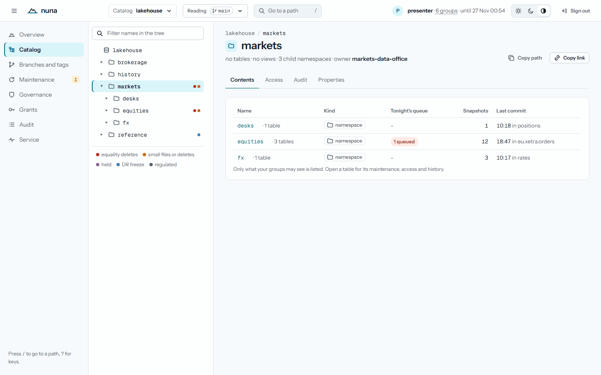

The namespace page
A namespace's page answers what it holds, what your groups may do in it, how it is governed (classification, owner, regulated mark, holds and DR freeze), its audit trail and its description. Engine users, data stewards, grant admins and platform operators each use a different tab.

Who sees it
Anyone whose groups hold describe on the namespace or above. The Audit tab appears only to those who manage the catalog's grants; the server answers it only with manage-grants on the namespace. Changing the description needs modify. The governance buttons need manage-tags, and the DR freeze needs a platform operator.
The head
The head shows the path, then N tables · N views · N child namespaces and, when one is set, owner owner. Copy path copies the dotted path, such as equities.daily; Copy link copies the page's address. A long path folds to … in the crumbs.
Contents
The child namespaces, tables and views your groups may see, with the same columns as the Catalog page's Contents. When it is empty: Nothing in this namespace, "Or nothing your groups may see. If you expected something here, ask a grant admin."
Access
The Access tab shows, in order:
- Grant access, for those who manage grants: the Grant access dialog, on this namespace.
- What you may do: what your groups' grants allow here, such as Read its data or Create tables, views and namespaces in it. With none: "Your groups hold no grant that reaches this namespace."
- The governance panel, with What the catalog enforces, Legal holds and Attributes.
- Kept by branches and tags.
- The grants: Grants that reach this namespace for those who manage grants, otherwise Your groups' grants.
The table page's Access tab describes each panel, dialog and refusal; a namespace differs in these ways:
- Its status reads DR freeze in force or No DR freeze, and N legal holds or No legal hold. What it sets, everything beneath inherits, shown as inherited from namespace path.
- Mark as a regulated area and Clear the regulated mark (manage-tags). "A regulated area closes every table beneath this namespace that has no classification of its own: it can be found and described, but not read, written or changed until someone classifies it, and it cannot be unregistered." The dialog asks for Reason, as it will be recorded, and its buttons are Mark as regulated and Clear the mark.
- Place a hold here (manage-tags) places a legal hold on everything beneath.
- Freeze for DR and Lift the DR freeze, for platform operators. "A DR freeze stops every commit and cleanup beneath this namespace until it is lifted. Platform operators set it." The dialog's field suggests DR reconcile in progress and asks "Write the reason."; its buttons are Freeze and Lift the freeze. Anyone else who calls it is refused with
only platform operators may call setDrFreeze.
Audit
The namespace's audit trail, newest first, with the same filters and panels as the table page's Audit tab. Without manage-grants, the tab is not shown and its link says "An object's audit trail is open to those who manage catalog's grants."
Properties
The Properties tab has one setting the console may change, Description (the property comment, at most 1,000 characters, none by default), with Change and Reset. "A change here is checked and audited like an engine's." Beneath, Every property lists every key engines set, read-only. Two have notes: location "Changes nothing: the catalog assigns every table's location itself, never from its namespace." and owner "Not the owner the catalog enforces: that one is on the Access tab."
The Change dialog's button is Set it; it refuses an empty value ("Write the description, or reset it to have none.") and a long one ("At most 1,000 characters; this has N."). Read through a branch or tag, the properties are main's and read-only, under main's, read now.
From the command line
| On the page | Endpoint |
|---|---|
| The namespace and its properties | GET /v1/{prefix}/namespaces/{ns} (Namespaces) |
| Change or Reset the description | POST /v1/{prefix}/namespaces/{ns}/properties (Namespaces) |
| Contents, with figures | GET /management/v1/catalogs/{catalog}/namespaces/{ns}/tables, …/namespaces (Name search and listings) |
| Governance; set or remove an attribute | GET …/namespaces/{ns}/governance; PUT, DELETE …/attributes/{attribute} (Governance) |
| Place and release a hold | POST …/holds, DELETE …/holds/{id} (Governance) |
| Freeze and lift | PUT, DELETE …/namespaces/{ns}/dr-freeze (Governance) |
| Grants that reach it | GET /management/v1/catalogs/{catalog}/grants/effective (Grants) |
| Audit | GET …/namespaces/{ns}/audit (Audit) |
See also
- The table page: the full Access and Audit tabs.
- Governance: regulated areas, holds and freezes.
- Place and lift a legal hold: the task step by step.
- Freeze and unfreeze for disaster recovery: the DR freeze.
How this page was checked
Written from the console's browse.js, access.js, panels.js, settings.js and kept.js, and from GovernanceRoutes.java, AuditReadRoutes.java and ManagementGuard.java, checked against commit b3e8582f on 2026-11-26.
The console was not driven in a browser.